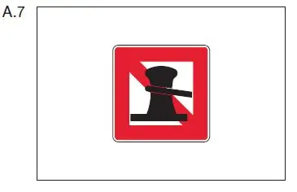
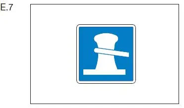
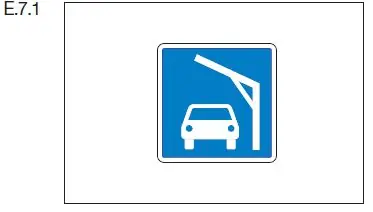

§ 7.04 Festmachen
Binnenschifffahrtsstraßen-Ordnung
1. Ein Fahrzeug, ein Schwimmkörper oder eine schwimmende Anlage darf am Ufer nicht festmachen:
a) auf einem Schifffahrtskanal, in einem Schleusenkanal oder auf dem Abschnitt einer Wasserstraße, für den ein allgemeines Festmacheverbot besteht;
b) auf einer durch das Tafelzeichen A.7 (Anlage 7) gekennzeichneten Strecke auf der Seite der Wasserstraße, auf der das Tafelzeichen steht. |  |
2. Auf einem Abschnitt, auf dem das Festmachen nach Nummer 1 Buchstabe a verboten ist, darf ein Fahrzeug, ein Schwimmkörper oder eine schwimmende Anlage nur auf einer Strecke festmachen, die durch eines der Tafelzeichen E.7 oder E.7.1 (Anlage 7) gekenn- zeichnet ist, und nur auf der Seite der Wasserstraße, auf der das Tafelzeichen steht. |  |
 |
3. Ein Baum, ein Geländer, ein Pfahl, ein Grenzstein, eine Säule, eine Eisenleiter, ein Handlauf oder ähnliche Gegenstände dürfen weder zum Festmachen noch zum Verholen benutzt werden.